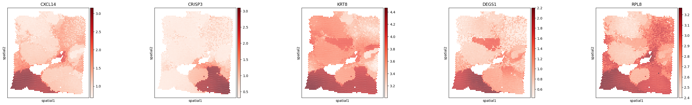

HumanBreastCancer (Visium) In Silico Knockout Tutorial
Note: To run this notebook, please first complete and execute the HumanBreastCancer (Visium) Analysis Tutorial notebook and save the resulting output files as instructed.
[1]:
from models.downstreamGenes import *
import numpy as np
import squidpy as sq
import scanpy as sc
import pickle
from models.help_func import build_cell_lr_tensor,set_seed
import matplotlib.pyplot as plt
set_seed(42)
/home/jtyu@ZHANGroup.local/miniconda3/envs/scild/lib/python3.10/site-packages/dask/dataframe/__init__.py:31: FutureWarning: The legacy Dask DataFrame implementation is deprecated and will be removed in a future version. Set the configuration option `dataframe.query-planning` to `True` or None to enable the new Dask Dataframe implementation and silence this warning.
warnings.warn(
/home/jtyu@ZHANGroup.local/miniconda3/envs/scild/lib/python3.10/site-packages/anndata/utils.py:434: FutureWarning: Importing read_text from `anndata` is deprecated. Import anndata.io.read_text instead.
warnings.warn(msg, FutureWarning)
Import data and SCILD results
[2]:
adata = sc.read_h5ad('./data/HumanBreastCancerVisium_adata_Sprod.h5ad')
[5]:
with open("./results/HumanBreastCancerVisium_SCILD_result.pkl", "rb") as f:
SCILD_res = pickle.load(f)
[7]:
SCILD_tensor, ligands, receptors = build_cell_lr_tensor(SCILD_res, adata.shape[0])
ligand_to_index = {lig: idx for idx, lig in enumerate(ligands)}
receptor_to_index = {rec: idx for idx, rec in enumerate(receptors)}
[8]:
SCILD_tensor.shape
[8]:
(3798, 45, 36)
Train the NN model
[9]:
model = train_model(
SCILD_tensor,
Y=adata.X.A,
hidden_dim=64,
epochs=500,
batch_size=256,
lr=1e-3,
val_split=0.2,
patience=20
)
Training Epochs: 31%|███ | 155/500 [01:03<02:22, 2.43it/s, Epoch=156, Train Loss=0.0029, Val Loss=0.0027, LR=0.000250]
Early stopping at epoch 157

Selection L-Rs of interset
[10]:
from models.help_func import build_adata_from_ccc_send_receive
SCILD_CCC_adata = build_adata_from_ccc_send_receive(SCILD_res)
SCILD_CCC_adata.obsm["spatial"] = adata.obsm["spatial"]
SCILD_CCC_adata.obs.index = adata.obs.index
[11]:
from models.help_func import compute_spatial_autocorrelation
moran_df = compute_spatial_autocorrelation(SCILD_CCC_adata)
moran_df = moran_df.sort_values('moran_I', ascending=False)
moran_df.head()
[11]:
| moran_I | p_value | |
|---|---|---|
| IL6_IL6ST_receive | 0.956677 | 0.0 |
| CXCL2_ACKR1_receive | 0.933459 | 0.0 |
| TGFB2_ACVR1B_receive | 0.922643 | 0.0 |
| FGF5_FGFR1_receive | 0.910162 | 0.0 |
| AREG_ERBB2_receive | 0.909412 | 0.0 |
[12]:
from models.help_func import rank_genes_by_total_signal
totalsignal_df = rank_genes_by_total_signal(SCILD_CCC_adata)
totalsignal_df = totalsignal_df.sort_values('total_signal', ascending=False)
totalsignal_df.head()
[12]:
| total_signal | |
|---|---|
| CXCL12_CXCR4_send | 647.624206 |
| CXCL12_CXCR4_receive | 647.624206 |
| CXCL12_ACKR3_send | 591.037468 |
| CXCL12_ACKR3_receive | 591.037468 |
| CXCL9_ACKR1_send | 336.197911 |
[13]:
from models.help_func import dict_to_ccc_dataframe_CT, compute_intra_inter_mean
grouped_df = dict_to_ccc_dataframe_CT(SCILD_res, list(adata.obs['region']), list(adata.obs.index))
grouped_df2 = compute_intra_inter_mean(grouped_df)
grouped_df2 = grouped_df2.sort_values('inter', ascending=False)
grouped_df2.head()
[13]:
| intra | inter | |
|---|---|---|
| CXCL12_CXCR4 | 0.000182 | 0.000023 |
| CXCL12_ACKR3 | 0.000153 | 0.000021 |
| CXCL11_ACKR3 | 0.000086 | 0.000012 |
| CXCL9_ACKR1 | 0.000074 | 0.000010 |
| TGFB1_ACVR1B | 0.000068 | 0.000009 |
[14]:
grouped_df.loc['Tumor margin'].loc['SI margin'].sort_values( ascending=False).head(10)
[14]:
CXCL12_CXCR4 0.000076
CXCL12_ACKR3 0.000067
CXCL9_ACKR1 0.000051
CXCL11_ACKR3 0.000045
CXCL9_CXCR3 0.000036
TGFB1_TGFBR2 0.000032
VEGFA_KDR 0.000030
TGFB1_TGFBR1 0.000028
TGFB1_ACVR1B 0.000027
CXCL10_ACKR1 0.000026
Name: SI margin, dtype: float64
[15]:
grouped_df.loc['SI margin'].loc['Tumor margin'].sort_values( ascending=False).head(10)
[15]:
CXCL12_CXCR4 0.000100
CXCL12_ACKR3 0.000087
CXCL11_ACKR3 0.000041
TGFB1_ACVR1B 0.000038
TGFB1_TGFBR1 0.000034
TGFB1_TGFBR2 0.000033
TGFB3_ACVR1B 0.000028
CXCL9_ACKR1 0.000028
VEGFA_KDR 0.000025
TGFB3_TGFBR1 0.000025
Name: Tumor margin, dtype: float64
plot
[16]:
sq.pl.spatial_scatter(SCILD_CCC_adata, color=moran_df.head(5).index, cmap='Blues', shape=None, size=5, ncols=5)
Please specify a valid `library_id` or set it permanently in `adata.uns['spatial']`

[17]:
sq.pl.spatial_scatter(SCILD_CCC_adata, color=totalsignal_df.head(5).index, cmap='Blues', shape=None, size=5, ncols=5)
Please specify a valid `library_id` or set it permanently in `adata.uns['spatial']`

[18]:
sq.pl.spatial_scatter(adata, color=['CXCL12', 'CXCR4', 'CXCL11', 'ACKR3', 'TGFB1', 'TGFBR2'], cmap='Blues', shape=None, size=5, ncols=6)
Please specify a valid `library_id` or set it permanently in `adata.uns['spatial']`

In silico knockout of CXCL12->ACKR3
[20]:
ligand_ = "CXCL12"
receptor_ = "ACKR3"
TG_name = list(adata.var.index)
ablation_results = ablation_analysis(
model,
SCILD_tensor,
l_idx=ligand_to_index[ligand_],
r_idx=receptor_to_index[receptor_],
gene_names=TG_name,
title_=f"In silico knockout impact of L={ligand_}, R={receptor_}",
save_file='./results/HumanBreastCancerVisium_InSilicoKnockout_CXCL12ACKR3_result.svg')
Top 10 affected genes (by magnitude) after ablating L=5, R=1:
1. CXCL14 — Δexpr = -0.0562 ↓
2. CPB1 — Δexpr = +0.0509 ↑
3. CSTA — Δexpr = +0.0491 ↑
4. SCGB1D2 — Δexpr = +0.0460 ↑
5. S100G — Δexpr = +0.0449 ↑
6. SCGB2A2 — Δexpr = +0.0439 ↑
7. CRISP3 — Δexpr = -0.0426 ↓
8. KRT8 — Δexpr = -0.0407 ↓
9. DEGS1 — Δexpr = -0.0372 ↓
10. RPL8 — Δexpr = -0.0369 ↓
Top 5 Upregulated Genes:
1. CPB1 — Δexpr = +0.0509 ↑
2. CSTA — Δexpr = +0.0491 ↑
3. SCGB1D2 — Δexpr = +0.0460 ↑
4. S100G — Δexpr = +0.0449 ↑
5. SCGB2A2 — Δexpr = +0.0439 ↑
Top 5 Downregulated Genes:
1. CXCL14 — Δexpr = -0.0562 ↓
2. CRISP3 — Δexpr = -0.0426 ↓
3. KRT8 — Δexpr = -0.0407 ↓
4. DEGS1 — Δexpr = -0.0372 ↓
5. RPL8 — Δexpr = -0.0369 ↓

[21]:
sq.pl.spatial_scatter(SCILD_CCC_adata, color=[f'{ligand_}_{receptor_}_send', f'{ligand_}_{receptor_}_receive'], cmap='Blues', shape=None, size=1, figsize=(5, 2.5))
Please specify a valid `library_id` or set it permanently in `adata.uns['spatial']`

[22]:
sq.pl.spatial_scatter(adata, color=[TG_name[i] for i in ablation_results['top_up_idx']], cmap='Reds', shape=None, size=15, ncols=5)
Please specify a valid `library_id` or set it permanently in `adata.uns['spatial']`

[23]:
sq.pl.spatial_scatter(adata, color=[TG_name[i] for i in ablation_results['top_down_idx']], cmap='Reds', shape=None, size=15, ncols=5)
Please specify a valid `library_id` or set it permanently in `adata.uns['spatial']`
